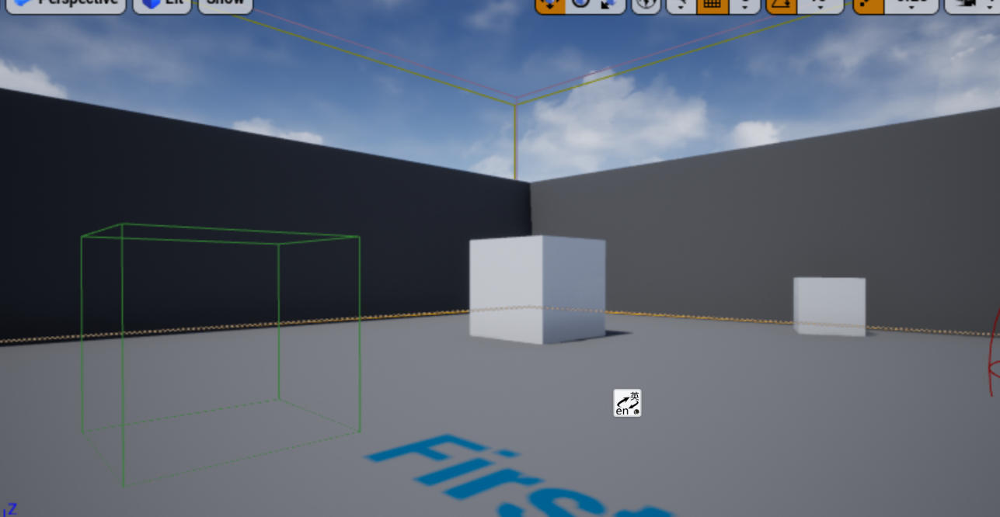
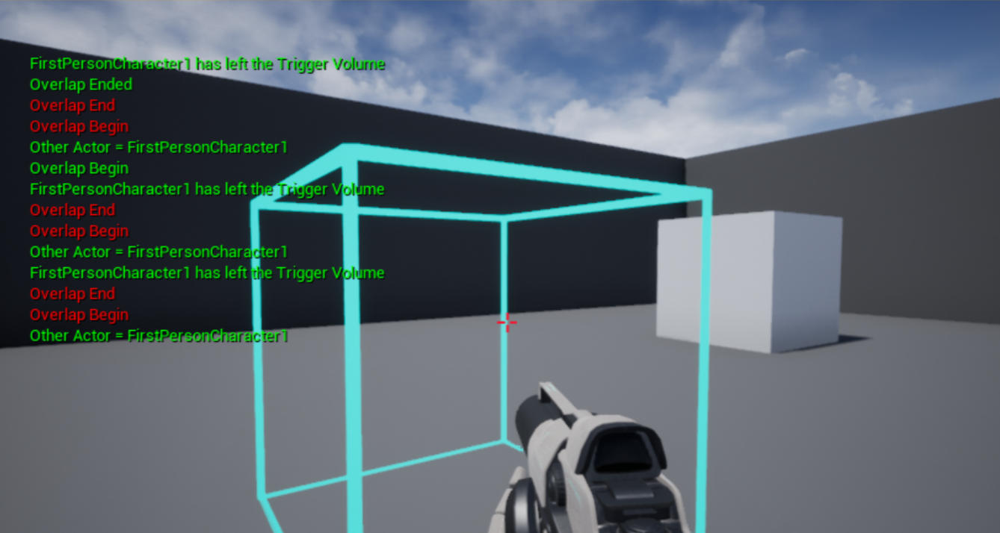

触发器体
接上一节教程，在本教程中，当 actor 与 TriggerVolume 重叠时将触发一个事件。本教程使用了TriggerBox，但过程应该是相似的。
创建一个新的 C++ TriggerVolume 子类并将其命名为 MyTriggerVolume 。在头文件中添加 OnOverlapBegin 和 OnOverlapEnd 函数。
下面是最终的头文件 MyTriggerVolume.h
#pragma once
#include "CoreMinimal.h"
#include "Engine/TriggerVolume.h"
#include "MyTriggerVolume.generated.h"
/**
*
*/
UCLASS()
class UNREALCPP_API AMyTriggerVolume : public ATriggerVolume
{
GENERATED_BODY()
protected:
// Called when the game starts or when spawned
virtual void BeginPlay() override;
public:
// constructor sets default values for this actor's properties
AMyTriggerVolume();
// overlap begin function
UFUNCTION()
void OnOverlapBegin(class AActor* OverlappedActor, class AActor* OtherActor);
// overlap end function
UFUNCTION()
void OnOverlapEnd(class AActor* OverlappedActor, class AActor* OtherActor);
};
在 .cpp 文件中，为了帮助我们可视化触发器体，我们必须 #include "DrawDebugHelpers.h" 文件。
#include "MyTriggerVolume.h"
// include draw debug helpers header file
#include "DrawDebugHelpers.h"
我们也可以 #define 一些调试日志的快捷方式。
#define print(text) if (GEngine) GEngine->AddOnScreenDebugMessage(-1, 1.5, FColor::Green,text)
#define printFString(text, fstring) if (GEngine) GEngine->AddOnScreenDebugMessage(-1, 5.f, FColor::Green, FString::Printf(TEXT(text), fstring))
在 actor 的构造函数中，我们将向 OnActorBeginOverlap.AddDynamic 和 OnActorEndOverlap.AddDynamic 注册重叠事件。
AMyTriggerVolume::AMyTriggerVolume()
{
//Register Events
OnActorBeginOverlap.AddDynamic(this, &AMyTriggerVolume::OnOverlapBegin);
OnActorEndOverlap.AddDynamic(this, &AMyTriggerVolume::OnOverlapEnd);
}
在 BeginPlay 上，我们将使用 DrawDebugBox 绘制调试框。
void AMyTriggerVolume::BeginPlay()
{
Super::BeginPlay();
DrawDebugBox(GetWorld(), GetActorLocation(), GetActorScale()*100, FColor::Cyan, true, -1, 0, 5);
}
接下来，我们将编写重叠函数，它将向屏幕打印一条消息，指示进入和退出 TriggerVolume 的 actor 。
void AMyTriggerVolume::OnOverlapBegin(class AActor* OverlappedActor, class AActor* OtherActor)
{
if (OtherActor && (OtherActor != this)) {
// print to screen using above defined method when actor enters trigger volume
print("Overlap Begin");
printFString("Other Actor = %s", *OtherActor->GetName());
}
}
void AMyTriggerVolume::OnOverlapEnd(class AActor* OverlappedActor, class AActor* OtherActor)
{
if (OtherActor && (OtherActor != this)) {
// print to screen using above defined method when actor leaves trigger volume
print("Overlap Ended");
printFString("%s has left the Trigger Volume", *OtherActor->GetName());
}
}
编译代码。将新 actor 拖放到游戏中。

按下播放按钮，并进进出出触发器体。
下面是最后运行的效果图

